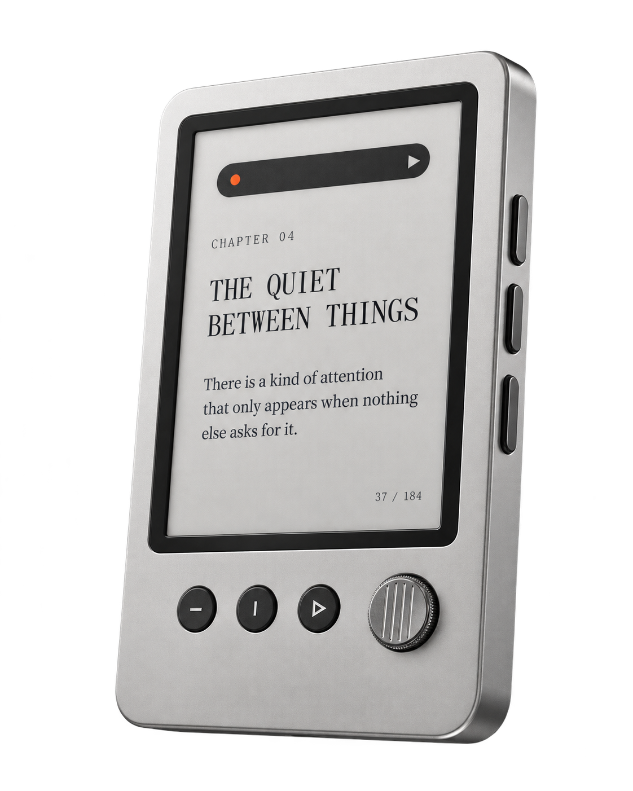
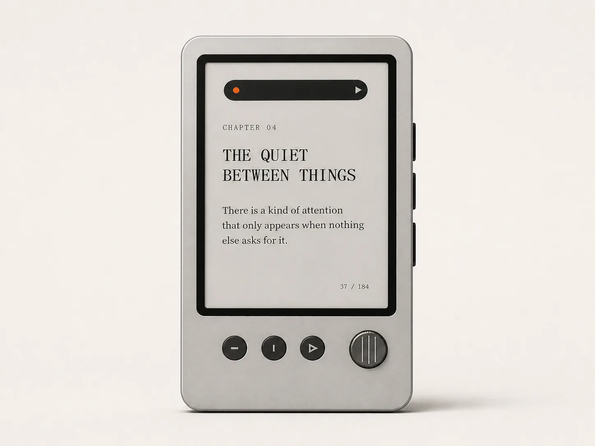
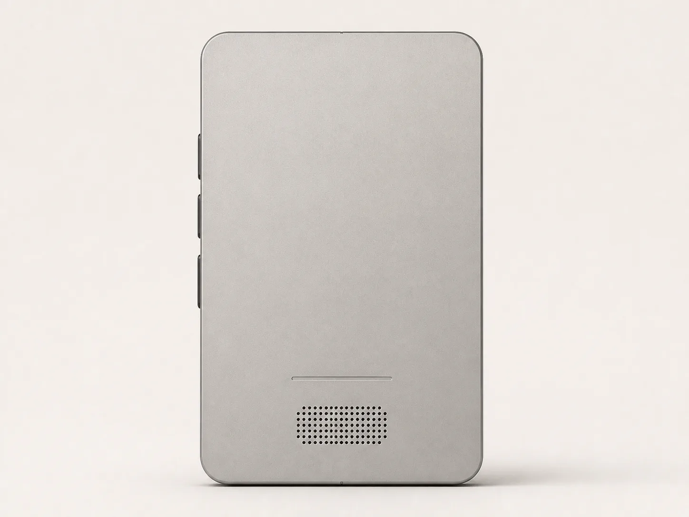
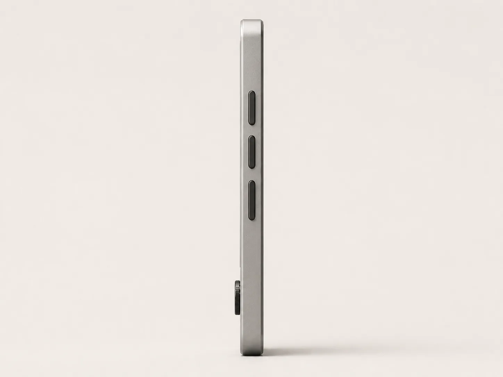
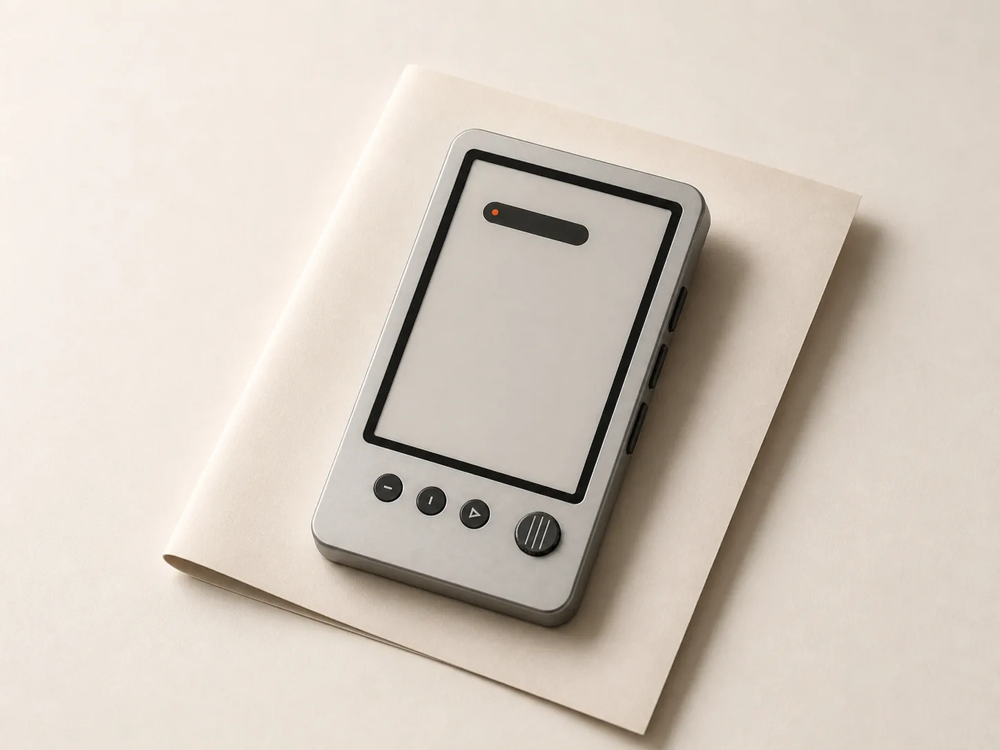
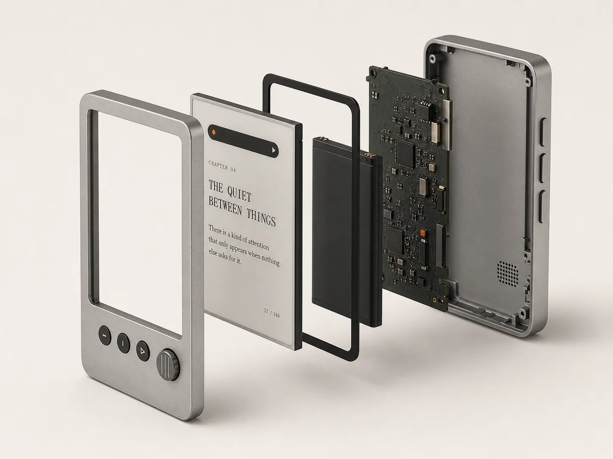
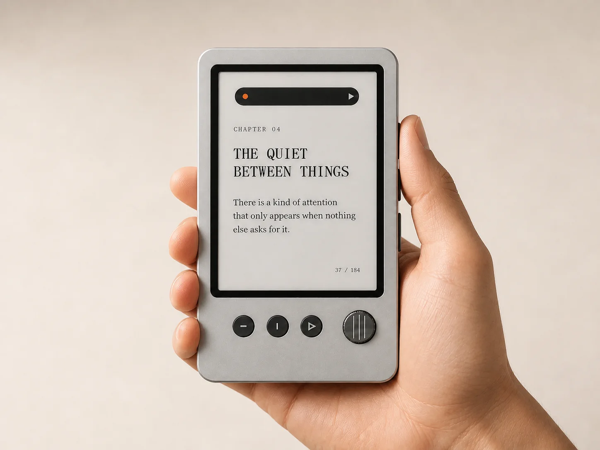
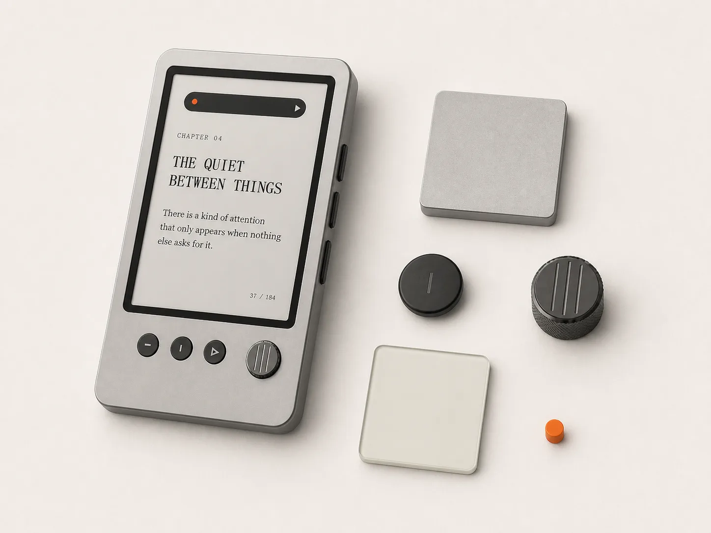

01概念产品2026
L–01 / LISTEN
阅读。
音乐。
仅此而已。
一台掌心大小的墨水屏阅读与 Hi‑Fi 播放设备。实体按键、音量滚轮、本地媒体和金属机身，把阅读与音乐留在同一件安静的工具里。
E‑InkHi‑Fi实体控制金属机身

阶段
概念设计 / 架构研究
概念设计 / 架构研究
寻求
电子 · 音频 · 结构 · 制造 · 投资
电子 · 音频 · 结构 · 制造 · 投资
概念视觉，非实机照片。造型、结构与材料仍在工程验证中。






